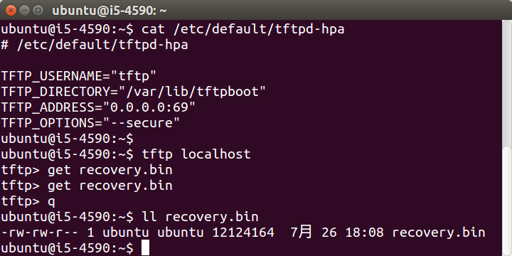
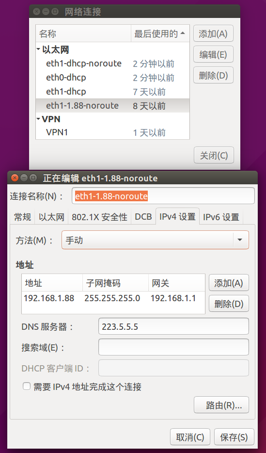
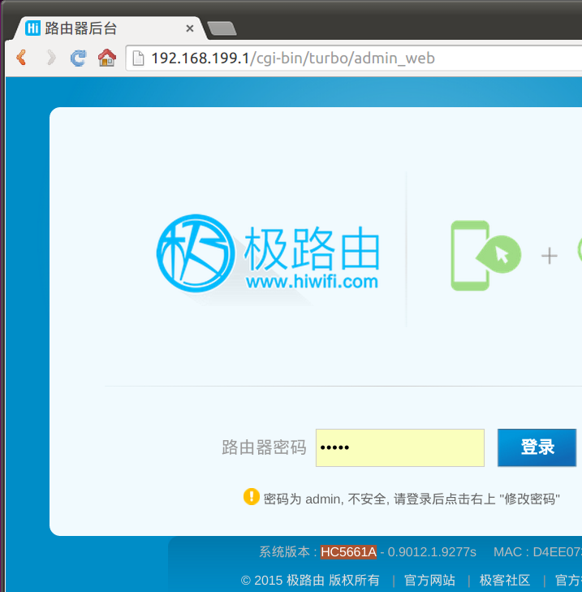
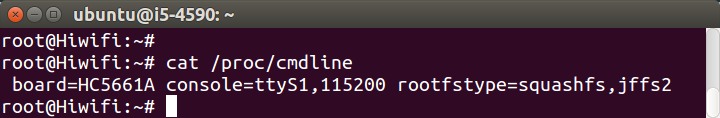
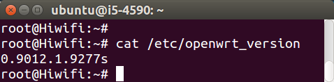
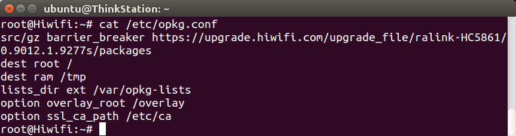

极路由固件下载
| rom版本 | 极3 HC5861 | 极2新款 HC5761A | 极2老款 HC5761 | 极1s新款 HC5661A |
|---|---|---|---|---|
| 0.9017.1.11380s | 下载 | 下载 | 下载 | 下载 |
| 0.9016.1.10769s | 下载 | 下载 | 下载 | 下载 |
| 0.9015.1.10299s | 下载 | |||
| 0.9013.1.9653s | 下载 | 下载 | ||
| 0.9012.1.9277s | 下载 | 下载 | 下载 | |
| 0.9011.1.9228s | 下载 | 下载 | ||
| 0.9011.1.9117s | 下载 | |||
| 0.9010.1.8595s | 下载 | 下载 | ||
| 0.9004.3685s | 下载 | |||
| 更多 | 查看 | 查看 | 查看 | 查看 |
已停产型号的固件下载：
- 极2老款 HC5761、极1s老款 HC5661 ： http://downloads.openwrt.io/vendors/gee/ralink/
- 极1 HC6361 ： http://downloads.openwrt.io/vendors/gee/ar71xx/
极路由官网ROM下载：http://www.hiwifi.com/rom
在极路由里执行tcpdump，然后在网页后台点升级然后取消，即可抓取极路由rom官方下载链接，然后打开a.cap搜索bin即可。指令如下：
tcpdump -i eth2.2 host ur.ikcd.net -w a.cap
极路由刷官方原厂固件
当极路由变砖无法正常工作时，可尝试刷机，一般都能修复。极路由支持tftp方式刷机，要求是：电脑装有tftp server，电脑IP需为192.168.1.88，固件名需为recovery.bin。
在Ubuntu电脑上先安装tftp，指令如下：
sudo apt-get install tftpd-hpa tftp-hpa
然后修改配置/etc/default/tftpd-hpa，否则第一次下载成功，以后都会失败报错："Transfer timed out."。
sudo sed -i 's/^TFTP_ADDRESS.*/TFTP_ADDRESS="0.0.0.0:69"/' /etc/default/tftpd-hpa
然后把固件拷进去，指令如下：
sudo chmod 777 /var/lib/tftpboot/
cp ~/Downloads/openwrt-ramips-mt7620a-hiwifi-hc5761-squashfs-sysupgrade.bin /var/lib/tftpboot/recovery.bin
chmod a+r /var/lib/tftpboot/recovery.bin
sudo service tftpd-hpa restart
需要测试一下能否正常下载，指令如下：
cd ~
tftp localhost
tftp> get recovery.bin
tftp> q
ll recovery.bin

然后把电脑IP设置为192.168.1.88，如果电脑有双网卡的话，会很方便。如图：

然后按住极路由的RESET键（极3直接按，极2等老机器需要用尖锐物（笔、取卡针、通针等）），给极路由通电。
观察电脑中tftp server的发送情况（可通过网速看出来），传输完毕即可松开RESET键。
路由器面板的多个灯会轮流亮起（跑马灯效果），跑完以后，路由器自动重启，刷机即完成。
网页查看极路由设备型号和固件版本
路由器网页后台的页脚，能看到“系统版本：设备型号 - 固件版本”，如图：

命令查看极路由设备型号
cat /proc/cmdline

命令查看极路由固件版本
cat /etc/openwrt_version

官方 opkg 配置
极路由官方opkg源地址为https://upgrade.hiwifi.com/upgrade_file/{arch}-{board}/{rom_version}/packages，比如极3的opkg.conf如下：
src/gz barrier_breaker https://upgrade.hiwifi.com/upgrade_file/ralink-HC5861/0.9012.1.9277s/packages
dest root /
dest ram /tmp
lists_dir ext /var/opkg-lists
option overlay_root /overlay
option ssl_ca_path /etc/ca

极1s HC5661A的opkg源为：
src/gz barrier_breaker https://upgrade.hiwifi.com/upgrade_file/mediatek-HC5661A/0.9011.1.9117s/packages
kernel vermagic
极3 HC5861
| rom版本 | kernel vermagic |
|---|---|
| 0.9012.1.9277s | 3.3.8-1-9366384773eac1d7a54437bf481e0e6e |
极2 HC5761
| rom版本 | kernel vermagic |
|---|---|
| 0.9010.1.8595s | 3.3.8-1-28dfc55c32c354db6f9faef9daca146f |
极1s新款 HC5661A
| rom版本 | kernel vermagic |
|---|---|
| 0.9011.1.9117s | 3.3.8-1-9b68df9bc038afc92a85c52c28fdd7a9 |
| rom版本 | 极1s HC5661 | 极1 HC6361 |
|---|---|---|
| 0.9010.1.8595s | 3.3.8-1-9b559f8e77ad01e85dc739bc7b7f8b90 | |
| 0.9008.2.8061s | 3.3.8-1-b4233d54b1c65faf7ee539e246a3a6ff | |
| 0.9004.3685s | 3.3.8-1-fb5489e31e5354c05e417dc9e153f815 |